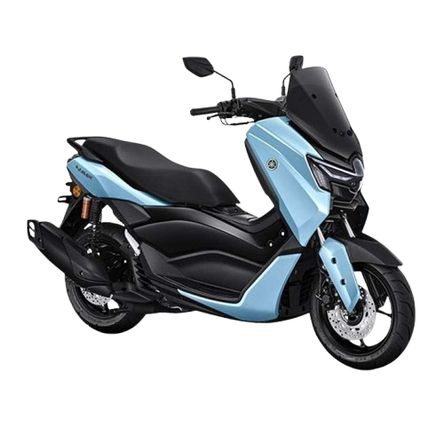

Bold by
nature.
Desain sporty dan modern dengan karakter maxi scooter.
Tampil beda bersama Yamaha NMAX. Desain premium, kenyamanan maksimal, dan gaya modern untuk setiap perjalananmu.
PILIH WARNA MOTOR
*Spesifikasi menyesuaikan tipe dan tahun motor.

Gaya, kenyamanan, dan pengalaman berkendara untuk menemani aktivitas setiap harimu.
Desain sporty dan modern dengan karakter maxi scooter.
Kenali desain dan kenyamanan sesuai tipe NMAX pilihanmu.
Jelajahi fitur dan teknologi yang tersedia pada variannya.
Kenali detail motor pilihanmu sebelum menentukan perjalanan berikutnya. Spesifikasi dapat berbeda menurut tipe dan tahun produksi.
Yamaha Indonesia ↗*Periksa spesifikasi resmi sesuai varian.
Pilih foto motor di bawah untuk mengganti tampilan motor utama.
Nama warna merupakan label tampilan website, bukan daftar warna resmi seluruh varian.
Temukan informasi varian, fitur, dan harga melalui website resmi Yamaha Indonesia.
Kunjungi Yamaha Indonesia ↗